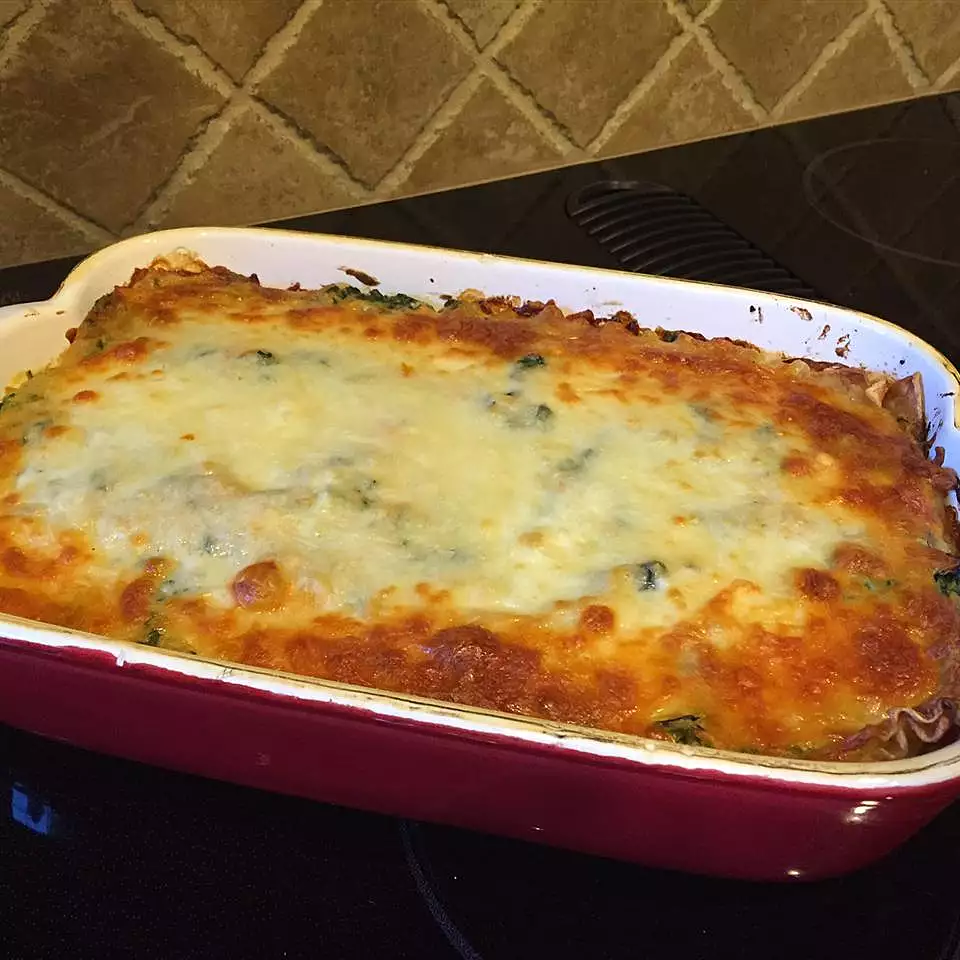

Home Page
Zack's GOATed Lasagna

Description:
Delicious vegetable lasagna with a white creamy sauce. A family favorite!
Ingredients
- 9 lasagna noodles
- 1/4 cup margarine
- 1/4 cup all-purpose flour
- 1/2 teaspoon salt
- 1/4 teaspoon ground black pepper
- 1 cup milk
- 1/2 cup vegetable broth
- 2 tablespoons white wine
- 1/2 cup grated Parmesan cheese
- 1 cup light ricotta cheese
- 1 egg
- 1 egg white
- 1 tbsp olive oil
- 2 cup shredded carrrots
- 2 cups chopped zucchini
- 10 oz frozen chopped spinach, thawed and drained
- 1 cup shredded mozzarella cheese
Recipe Steps!
- Bring a large pot of lightly salted water to a boil.
Cook lasagna in the boiling water, stirring occasionally
until cooked through but firm to the bite,
about 8 minutes. Drain.
- Preheat oven to 375 degrees F (190 degrees C)
- Melt margarine in a skillet over low heat; cook and stir flour,
salt, and pepper into the melted margarine until smooth and
bubbling, 2 to 3 minutes. Add milk and broth into flour mixture,
stirring constantly; bring sauce to a boil. Stir wine into sauce
and remove from heat. Stir Parmesan cheese into sauce until smooth.
- Whisk ricotta cheese, egg, and egg white together in a bowl.
- Heat olive oil in a skillet over medium-high heat; saute carrots,
zucchini, and spinach until just becoming tender, 5 to 10 minutes.
Stir vegetable mixture into ricotta mixture.
- Layer 1/3 the lasagna noodles, 1/3 the ricotta-vegetable mixture,
and 1/3 the Parmesan sauce in a 9x13-inch baking dish; repeat layering
2 more times with remaining ingredients, ending with a
layer of mozzarella cheese.
- Bake in the preheated oven until cheese is lightly browned and
bubbling, about 30 minutes.